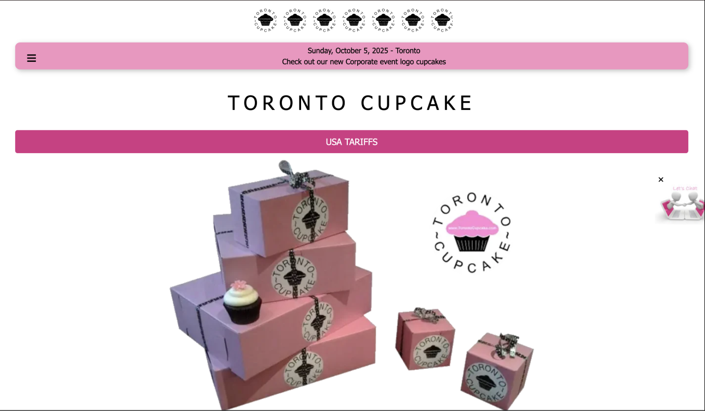

Projects
Case Study
Interaction Design Rules Part 2
Problem Statement
The objective of the Interaction Design assignment was to find areas for improvement or the design principles of affordances, signifiers, and mapping and create a redesign of the page that shows those improvements. The website that I was given to focus on for this assignment was torontocupcakes.com.
Overview of Design Process
Affordances and Signifiers
The first issue that I focused on was the website’s navigation menu, however it was not visible on any page unless the hamburger icon was clicked or the user scrolls to look at the site footer. The afforded capabilities of the user were not known because the menu was not visible. I created a clear navigation menu that stayed at the top of the page with all of the pages listed and clickable.
My second issue was with the bar at the top of the screen that appears clickable and has a message for users to look at a certain page of the site. The bar that contains the message and the content could let the user believe that clicking this bar would redirect them to the page mentioned. I included the navigation bar from the previous redesign and also turned this bar into a button that does redirect the user to the page mentioned. It is also styled in the same way as their existing link to read their statement regarding the US Tariffs.
Mapping
A mapping issue I spotted was that the action of clicking “Add to Cart” from the cupcake page takes you directly to the cart and interrupts the shopping experience. This can be annoying for the user if trying to order multiple different flavors and being directed back and forth between the cart and the cupcake order page. This action resulting from the button is unexpected and does not reflect the button label. This redesign is better than the original because it clearly states that the item has been added to the cart and gives the option to view the cart without automatically redirecting the user to it. The resulting action from the button matches the user’s expectation of adding the item to their cart and does not force them to take any other unwanted action as the original does.
The second issue is that there is no clear page for ordering. To order cupcakes, the user must click on a section under “Cupcakes” and then click their desired flavors from there. It is not immediately clear how to order from the site before clicking around. The “Cupcakes” label doesn’t reflect the action of ordering from the site, and the tab itself is not even clickable. This can cause confusion or frustration from the user not being able to click the link despite it having the same clickable attributes as the rest of the menu. This redesign is better than the original because it is a clearly laid out ordering page that is available from the main menu. I added the same navigation bar I created for the other redesigns and added an “Order Now” page to it that has options on the page for looking at the different cupcake options offered. Adding this page to the navigation makes it clear to the user where to go to order from the site. I also made the page bold at the top to highlight the current page being shown, as well as the underline under the cupcake section to show the current section being shown.
Final Outcome
The final redesign of the Toronto Cupcakes website presents a more intuitive and user-friendly interface. The navigation bar is now clearly visible on every page, allowing the users to always be aware of their possible interactions with the site. Elements such as the promotional button and “Add to Cart” button now match user expectations through clear signifiers and logical mapping. The new “Order Now” page provides a more direct and understandable path for customers, reducing confusion during the ordering process. Overall, my redesign enhances usability and creates a smoother, more enjoyable shopping experience for the site's users.
Reflection
With this assignment, I further learned and got the opportunity to understand the importance of applying these design principles when creating designs. The application of these principles can greatly affect the user's experience and usability. I was also able to practice evaluating interfaces and creating designs that follow the Interaction Design Principles.
Skills
- Visual Design